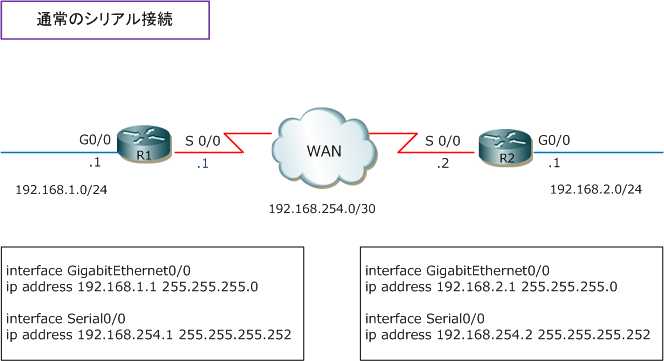
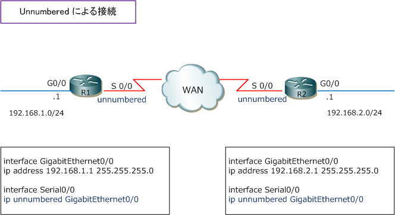
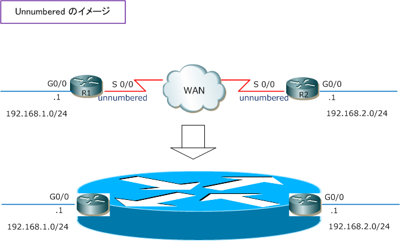
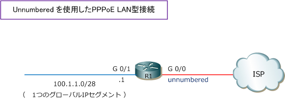

IP Unnumbered
IP Unnumbered（IPアンナンバード）とは
IPアンナンバードとは、WAN側にIPアドレスを割り当てずにLAN側のIPアドレスを借りる設定のことです。 IPアンナンバードにより、ルータのWAN側ポートにIPアドレスを割り当てることなくLAN側ポートだけに IPアドレスを割り当てることで、2台のルータをまるで1台のルータのように扱うことも可能です。
このIPアンナンバードの技術を使用することにより、割り当てるIPアドレスを節約することができます。 下図で具体的に見ていきましょう。WAN側に「 192.168.254.0/30 」のセグメントを割り振っています。

これをUnnumbered（アンナンバード）によるアドレッシングをすると192.168.254.0/30のセグメントを 割り当てることなく、R1とR2のLAN間で通信することが可能です。例えば、Ciscoルータでは以下のように 設定します。ip unnumbered の後はそのルータの送信元となるIPアドレスのインターフェースを指定します。

Unnumbered（アンナンバード）のイメージ図
Unnumberedがなぜ2台のルータを1台のように見せる技術かというと、Unnumberedを設定することで 論理的には下図と同じ状態になるからです。ただし、シリアル接続時のWANセグメントのIPセグメントが もったいないからUnnumberedを使用するのではなく、一般的にはPPPoE接続で使用することが多いです。

Unnumbered を使用する PPPoE LAN型接続
Unnumberedは、PPPoEによるインターネット接続する際にとても役立ちます。先に紹介した構成では プライベートIPアドレスを利用してネットワークを構成できますが、PPPoEによるインターネット接続では グローバルIPアドレスが付与されるので、WAN側（インターネット接続側）に割り振られるIPアドレスを なし（unnumbered）にして、グローバルIPアドレスを節約した構成を組むことが非常に重要になります。
PPPoE接続のLAN型接続の場合は、1つのグローバルIPセグメントが割り振られるので unnumbered を 実装できないルータではWAN側（インターネット接続側）だけにこのグローバルIPセグメントが割り当て られるだけで、複数のグローバルIPアドレスを割り当てられても利用できない状態になってしまいます。
また、機種や構成によりそもそも動作しない場合もあり、ISPのいわゆる「グローバル8IP」の契約では、 Unnumbered対応のルータが必要と注釈としてあります。CiscoルータはもちろんUnnnumbered対応です。

参考情報 1
PPPoE接続には、端末型接続（端末払い出し）とLAN型接続（LAN型払い出し）の大きく2方式があります。 端末型接続の場合、1つのPPPoEセッションに対して、1つのグローバルIPアドレスを動的に払いだす方式。 LAN型接続では、1つのPPPoEセッションに対して、1つのグローバルIPセグメントを動的に払いだす方式。 Unnumbered を使用したPPPoE LAN接続のCiscoルータの設定例もご参考頂ければ理解しやすくなります。
参考情報 2
このUnnumberedにより、「グローバルIPアドレスを払いだす方式」は、一般的にはPPPoEのみとなります。 PPPoE以外の方式によって、キャリアから例えば「 /28 」のグローバルIPを払いだす場合、Internet接続用 リンク（WANリンク）に/30のグローバルIPアドレスを使用し、キャリアルータ、顧客ルータがそのポイント ツーポイントでそのグローバルIPアドレスを使用します。キャリアルータは顧客ルータに払いだす「/28」の ネットワークを宛先としたスタティックルートを定義しており、顧客ルータはデフォルトルートを設定します。